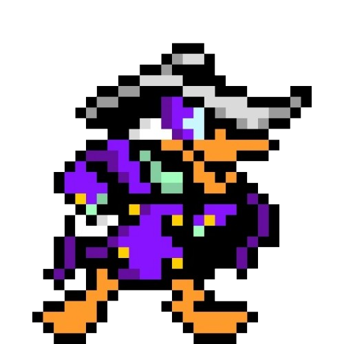

About me
Born in the 80s, raised in the 90s. I spent my time drawing, playing games, writing short stories and putting on plays with my cousins. I was glued to cartoons like Darkwing Duck and TMNT and movies like Back to the Future and Jurassic Park shaped a lot of how I see the world and the stories within it.
These days I lead design teams for work. Outside of that I'm usually drawing, writing, watching movies, playing games, or tinkering with projects like this one. Most nights it's simple: a book or time with my family.
I'm curious by nature and ask a lot of questions, and I talk too much sometimes. Even when there's no clear answer; asking why helps me see a little better and shape what I'm working on.
The journey so far
I worked at a few retailers early on, but here's where I've been for the past 20+ years.
Movies I've recently watched
Using Letterboxd, here are the last 4 films I've enjoyed and my thoughts on them.